非官方中文离线译本。原文来自 vantage.rulepop.com（Stonemaier Games / Rulepop）。规则、界面与故事书已译为简体中文。仅供拥有正版游戏的玩家桌边查阅，请勿重新发布。
这是什么？
本站是 Vantage 的规则速查（原站为 Stonemaier Games 官方参考；本镜像为非官方中文译本）。
适合快速查找某条规则，也可作为盒内规则书、教学视频或教人玩游戏时的补充。
使用提示
前进/后退导航：将每条规则条目视为独立网页。若要返回，按 返回按钮。
查看索引 ：找不到你要的内容？索引收录游戏中所有术语。 警告： 包括 剧透.
安装本站: 本站是 （渐进式 Web 应用）。你可将其安装为独立应用，速度极快，且离线也能使用。
链接到规则：想分享某条规则的链接？只需点击其标题！
制作人员
设计： Jamey Stegmaier
美术： Valentina Filić、Sören Meding 与 Emilien Rotival
特别感谢
Vantage 对我来说（Jamey）已是一项投入超过 8 年的热情项目，但我并非孤军奋战。除了 Valentina Filić、Sören Meding 与 Emilien Rotival 以近 1700 幅插画创造整颗行星这一浩大努力之外，我永远感激 Juliana Moreno 与 Ariel Rubin（The Wild Optimists）设计部分局内谜题，Ira Fay 从零打造试玩 App，Panda Game Manufacturing 的 Shannon Lentz 多年来关于组件的讨论，Jose Manuel López-Cepero 打造 Web App，Karel Titeca 与 Christine Santana 的排版与平面设计，Morten Monrad Pedersen 与 Automa Factory 团队协助剧透包单人规则，开发者 Garrett Feiner 与 Travis Willse 的细致反馈与编辑，以及 Ryan Davis 与 Travis Willse 为许多 Move 与 Depart 故事书结果增添额外亮点。
测试玩家： Mike Bartoo-Abud, Mitch Caudill, Blake Chursinoff, Caleb Chursinoff, Dusty Craine, Ryan S. Davis, Susannah Eisenbraun, Mark Espiridion, Ira Fay, Allie Feiner, Garrett Feiner, William Augustus Griffin Sr., Lindsay Grossmann, Ossian Hawkes, Wanja Heeren, Preston Holmes, Chris Ingold, Josh Jahner, Ben Jepsen, Abigail Jones, Emily Jones, Derik Kellner, Robert Konigsberg, Max Lüdov, Tyler McKinnon, Thom Mollinga, Chris Munford, Jay Nabedian, Crystal Nevin, Jason Nevin, Nicolas Pupat, Gregory Rempe, Caroline Rempe, Clara Rempe, Dominick Salazar, Ana Salazar, Erica Sanders, Artur Carvalho Santos, Nathan Smith, Franziska Steiner, David Studley, Lieve Teugels, Karel Titeca, Kobe Titeca, Michael Vannoy, Josh Ward, Travis Willse, Shawn Wilson, Darren Wolford, Frank Wolf, Kentoku Yamamoto
校对： Brian Chandler, Garrett Feiner, Jan Horák, Jared Kepron, Mike Lee, Crystal Nevin, Justin Radziewicz, Asa Swain, Karel Titeca, Ian Tyrrell, Jay Voss, Josh Ward, Travis Willse, Dana Woller, Dave Zokvic
我也无比感激在许多方面启发 Vantage 的优秀游戏，包括 The Legend of Zelda: Breath of the Wild（与 Tears of the Kingdom）、The Witcher 3、Baldur's Gate 3、Eastshade、Stardew Valley、Subnautica、Red Dead Redemption、Ghost of Tsushima、Elden Ring、Tunic、TIME Stories、The 7th Continent（与 Citadel）、Sleeping Gods、Tainted Grail、Earthborne Rangers、Near and Far、Crusoe Crew、Lands of Galzyr、Micro Macro、One Deck Dungeon、Roll Player Adventures 等。
更新日志
- 13 May 2026
-
故事书条目小幅修正。屏幕前进/后退导航调整。
- 14 Feb 2026
-
故事书条目小幅调整。
- 22 Jan 2026
-
故事书条目小幅调整。
- 26 Dec 2025
-
更新勘误以与 Stonemaier 网站一致。
- 10 Dec 2025
-
在故事书查询中加入来自《秘密之书》的地点001，并对部分故事书措辞做了小幅修正。
- 26 Oct 2025
-
故事条目格式与措辞的小幅修正。
- 13 Oct 2025
-
已更新 勘误。故事书条目修正与澄清。
- 20 Sep 2025
-
故事书条目修正与澄清。
- 11 Sep 2025
-
已更新 勘误。故事书条目格式与措辞的小幅修正。
- 29 Aug 2025
-
已更新 勘误。故事书条目格式与措辞的小幅修正。
- 26 Aug 2025
-
勘误 针对离开213。额外规则澄清。部分故事书条目措辞微调。
- 17 Aug 2025
-
更新城市术语条目。修复故事书条目中的连字符问题。
- 9 Aug 2025
-
更新勘误。
- 7 Aug 2025
-
更新部分故事书条目文字，以及少量内容样式修正。
- 2 Aug 2025
-
更新了部分故事书条目文字，并修正两处小笔误。
- 28 Jul 2025
-
更新勘误。启用屏幕常亮设置。在部分故事书条目中加入链接。
- 25 Jul 2025
-
更新了勘误。修复了个位数故事书条目的访问。
- 24 Jul 2025
-
在故事书条目中加入披露控件以隐藏决策结果。
- 23 Jul 2025
-
新增故事书查询功能，含故事书内容更新。
- 21 Jul 2025
-
更新勘误与 FAQ。纳入《秘密之书》术语表内容。
- 17 Jul 2025
-
已添加至 卡阵 章节：“你不得在供应区中的横向卡牌上放置挑战骰。”
- 16 Jul 2025
-
来自规则书 r20 版本的更新。更新了勘误。
- 15 Jul 2025
-
新增常见问题、勘误与资源。
- 上次检查
能力
能力卡为你和其他玩家提供挑战骰 槽位 针对特定行动。例如你可能学会游泳，并可指导需要游泳的同伴（故有影响 槽位）。
-
能力卡上部分行动提到「附近」自然特征，表示仅当该特征在当前地点可见且易达时可用。
-
部分能力行动允许获得匹配行动的收益（即在地点上，计为已完成的地点行动）。
行动
回合 步骤 1：从三类行动中选择一项行动
你在不知费用或结果的情况下做出选择，但你总会成功。挑战在于避免失去 时间 (), 士气 (），或 体力 ().
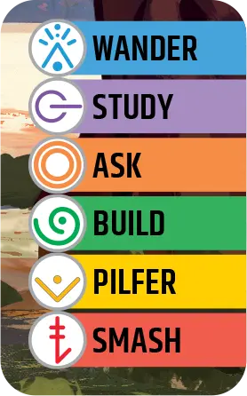
每个 地点 列出（通常为 6 个）地点行动，类别为 移动 , 观察 , 接触 , 协助 , 获取 , and 压制 .
查阅此地点的故事书条目（例如，对于 观察-研究 在地点 272 上的行动，查阅故事中条目 272 观察 故事书）。
-
若你此前在此执行过地点行动（即使是在倒数第二个回合之前的某回合），你不能再执行另一次。 改为选择离开行动或卡牌行动。
-
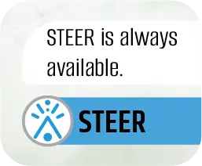
“始终可用”: 部分地点行动列表可能注明特定行动始终可用。即使你此前在此执行过该行动或其他地点行动，此行动仍可用。
-
若本局有其他玩家曾到访同一地点，你不可执行主题矛盾的地点行动（例如若有人曾在该处烧桥，你不可过桥）。因 Vantage 是高度视觉化的单局游戏，玩家应能记住去过何处、做过什么（必要时允许做笔记）。
许多非地点卡包含行动选项。其中包括你 卡阵、你的供应区，以及 中央板.
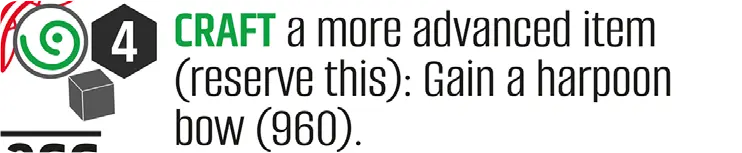
-
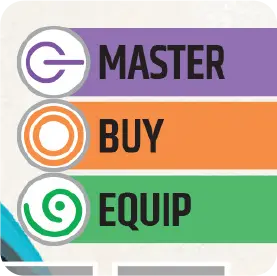
查阅该特定卡牌的故事书条目（例如，对于 协助-EQUIP 在卡牌 1435 上的行动，查阅故事中条目 1435 协助 故事书）。
在完成行动之前，你不得观察将要获得的卡牌（若有）。
除非另有说明，即使你已在该卡上执行过行动，你仍可执行卡牌行动。
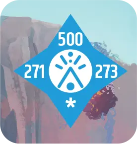
离开你的 地点 向四个基本方向之一前往另一地点（北始终指向前方）。这是 移动 行动。
每个数字（此地点为 500、273 和 271）是一个 列出的相邻地点。你可以通过 1 费用前往这些地点中的任意一个 移动 行动（步行 or 游泳）且不使用故事书。
每颗星（*）需查阅 Depart 故事书。对此地点，在 Depart 故事书中查看地点 272 的「向南移动」条目，以获知向南离开的费用、行动与结果。
在极少见的情况下，若某方向既未显示地点编号，也未 *，你无法沿该方向从此地点离开。
动物
Vantage 包含大量动物（与类人 智者 世界）。
《秘密之书》与术语
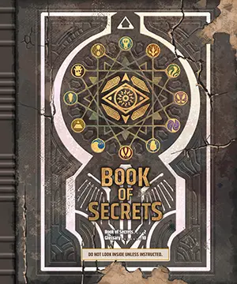
仅在卡牌或行动结果指示时查阅《秘密之书》条目。其中含谜题解法与目标结算。
《视界之书》
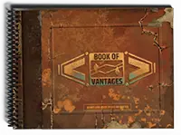
仅在卡牌或行动结果指示时查阅《视界之书》；若查阅，可向其他玩家描述所见，但不可直接展示。
激励
在任意回合的任意时刻（即使在行动中途或其他玩家执行行动时），你可使用激励 你……卡牌上的能力 卡阵 使自己受益。激励代表你在探索星球并使用所发现事物时学到的知识。
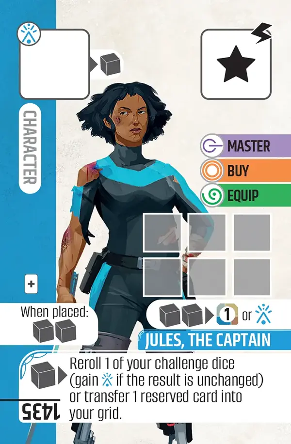
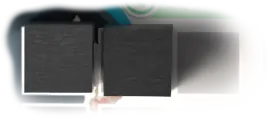
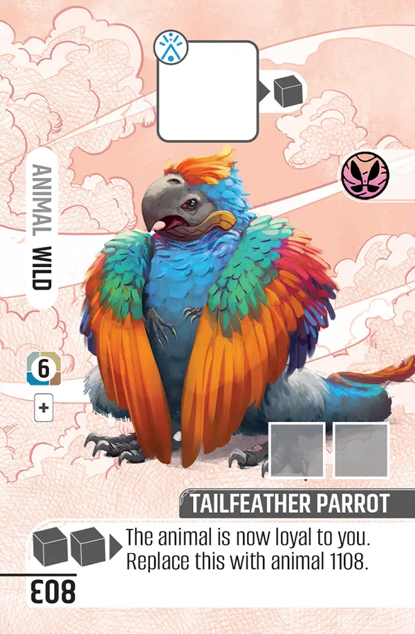


激励获得/支付于 地点 进出你的角色（例如，若某地点行动的故事书文字写“获得1个激励”，则将其放在你的角色上）。
在其他所有卡牌上获得/支付的激励均置于/取自该卡。
卡牌


- 挑战骰 槽位 (移动) 你的一枚挑战骰可放置于此（需 移动 行动）；在此放置骰子后获得 1 激励
- 部分卡牌有金币价值（) 游戏会在此重要时告知你
- 储备 容量 你可保留在卡阵之外的纵向卡牌数量（额外 1 张）
- “放置时”收益 首次将此卡放入卡阵时获得（2 激励）；若此收益涉及其他卡，仅考虑你卡阵中的卡。
- 卡牌编号
- 挑战骰 槽位 作为影响槽 ，挑战骰的士气结果 任意玩家掷出的骰子可放在此处
- 卡牌行动 当你执行其一，参阅此卡（1435）的故事书条目
- 激励 容量 激励数量 此卡可容纳（6）
- 激励 能力 随时从本卡支付 2 激励，以获得 1 金币或 1 移动 技能标记
- 激励 能力 随时从本卡支付 1 激励以执行此操作
中央板（游戏盘）
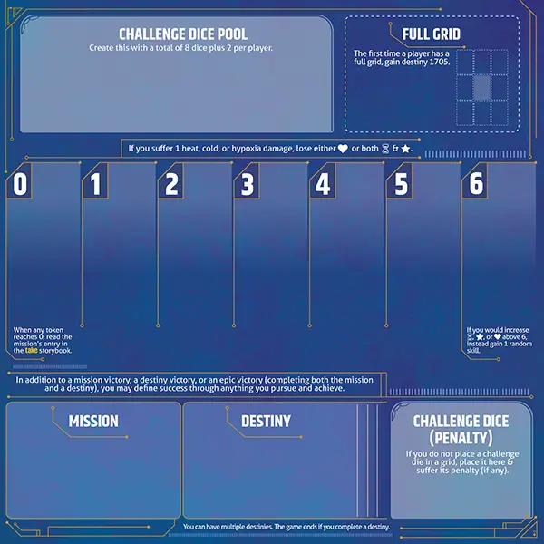
挑战骰
回合 步骤 4：从挑战骰池掷出等同于剩余费用的骰
The 费用 行动难度；从池中掷等于费用数值的挑战骰（例如费用 2，掷 2 枚挑战骰）。
角色
每名玩家始终在其卡阵中央拥有一张角色卡 卡阵. 你就是该角色；透过其双眼看世界。每名角色独特，若想增加角色间不对称，可尝试执行一些 行动 印在你的角色上。
起始
金币
你会发现多种赚取和花费金币的方式（记作 卡牌上以及故事书文字中的 $1）。许多 卡牌 也有金币价值；行动 结果 会指示何时可按价值出售物品。除非你在同一 地点 作为另一名玩家，你不能在玩家之间转移金币。
组件
组件清单
- 415 张大型卡牌（双面；80x120mm）
- 916 张标准卡牌（57×87mm）
- 1 包剧透卡牌
- 8 本故事书（含《秘密之书》）
- 1 本《视界之书》
- 1 块游戏盘（中央板）
- 20 颗挑战骰
- 12 颗技能骰
- 60 个激励标记（方块）
- 60 个技能标记
- 45 硬币
- 6 个时间追踪条（每位玩家 1 个）
- 6 个士气追踪条（每位玩家 1 个）
- 6 个体力追踪条（每位玩家 1 个）
- 6 个地点卡托（每位玩家 1 个）
构成
部分 行动 and 能力 指卡的「构成」，即该卡主要关联元素。这些图标也出现在部分挑战骰 槽位。并非所有卡都有构成，若有，则以下列图标之一显示：
-
电路
-
能量
-
火
-
金
-
叶
-
金属
-
沙
-
筋腱
-
石
-
水
-
风
-
木
费用与行动
回合 步骤 2：朗读费用与行动（非结果）
部分卡印刷费用和/或行动，但多数需查阅故事书。多数情况下用故事书条目查看费用与完整行动。使用与类别匹配的故事书（例如 接触）以及与行动所在卡匹配的条目（例如，地点 272）。
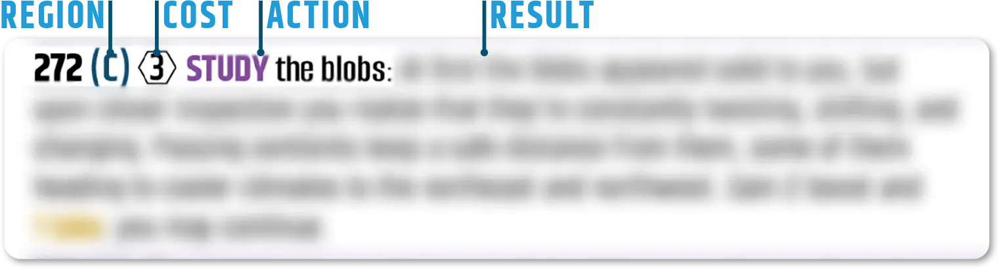
-
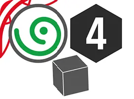
部分卡含完整费用、行动与结果——这些行动勿查故事书。除行动类型与标准费用（数量为 要掷的挑战骰），卡阵卡牌上的部分行动也有激励费用 (; 从该卡支付的方块）。右侧示例中，这是4费用 协助 还要求你额外支付 1 激励的行动。
-
若 离开行动 你选择的是相邻所列地点，则 移动 费用为 1。其他相邻地点标有 *；你必须查询其 移动 声明方向后查阅离开类故事书中的费用。
斜向： 若沿特定基本方向移动（如向东），且 Depart 故事书有相关斜向条目（如向东南），可选择改走该相关方向而非原选择。
区域： 部分地点行动指区域（涵盖多地点的更大范围），为括号内字母，见于 观察 你所在地点的故事书条目。
对于有费用的行动 ，从 1–6 选数作为费用。表示投入多少努力，行动结果取决于所选费用数字。
继续
回合 步骤 8：结束你的回合。
若某地点 行动的 结果包含“继续”指示时，你必须执行额外行动，忽略 步骤 1 （例如，若你已执行过 接触 地点行动，你可以选择另一个地点行动，但不能是同一 接触 行动）。
诅咒
当被附近的……发现你在做鬼祟之事时 智者 （有时在相邻地点的视野之外），你有可能获得诅咒卡。若如此，你必须将其放入你的 卡阵。若你的卡阵已满，则不得 储备 诅咒。改为储备一张非角色卡以腾出空间。
每个诅咒为未放置的 挫折 挑战骰结果（）当任何玩家与地点或其他带有对应 构成 图标。就卡阵卡放置挫折骰而言，挫折结果不等同于挑战骰上的时间、士气、体力结果。 槽位，即使未放置特定挫折结果的惩罚是失去时间、士气或体力。
伤害
若你受到 1 点高温、严寒或缺氧伤害，失去 1 体力或 ，或 两者 1 时间 and 1 士气 .
难度
Vantage 为玩家提供多种调节获胜难度的选项，其中大多数在 开局。不妨自行尝试，看看哪种最适合你。
你的时间、士气和体力的起始位置 追踪器. 若你胆量大，可全部设为 3 或 4；想要一点缓冲可选 5 或 6（轨道上限为 6）。就像 Nations，每位玩家独立选择，并考虑更冒险的玩家可能在局中更需要他人协助。你甚至可根据希望的游戏时长选择起始数值——我们发现有些玩家希望首局较快结束以免学习机制时看到太多，而其他人更偏好轻松体验。
任务类型。 任务通过掷 2 技能骰。数学上，掷出特定符文对的几率低于特定非对，故与对子相关的 6 张任务卡最难。如地点 000 所示，可重掷对子以获得较易任务。
坠机地点。 在每次 逃生舱，共有 21 个可能坠毁地点（6 个逃生舱共 126 处）。前 6 个——对子——气候更极端，可重掷以获得较易开局。
各任务卡上包含助力你推进的行动。 这些行动在试玩过程中加入，以协助任务困难的玩家。游戏不会手把手，许多任务有多种完成方式（此外你也可决定不在乎任务）。但若任务对你很重要却仍困难，每张任务卡含 4 项可协助的行动。
挑战骰（可选变体）： 玩家第一次在卡阵中拥有 3 张和 6 张卡牌时 卡阵，永久向挑战骰池加 1 枚骰。6 人不可；1–5 人共向池加 2 枚挑战骰。
元素体
元素体是星球初次以12种 元素.
元素体地点： 每局首次到达元素体地点时，会立即受罚并被迫前往相邻地点。这可视为元素体的警告。
元素体卡牌： 若你通过释放获得元素体，它会指示你将3 激励 从相邻卡转移到元素体（吸收周围卡牌力量）；若与元素体共边的卡上激励超过 3，你选择转移哪些激励。每个元素体有几个挑战骰 槽位 需支付激励（来自元素体）才能使用。若元素体上无激励，失去该卡并获得所列收益（1 时间/士气/体力与 1 个特定 技能).
斩杀元素体： 斩杀巨型元素体是艰巨任务，需要多次 行动 以完成。若你选择 压制-斩杀 行动时，会指示在桌上找 4 张卡组合成元素体。你可选择先击杀哪张卡（怪物不同部位），不同部位带来不同收益以协助你 斩杀 行动。你也可以选择撤退，终止尝试 斩杀 元素体。元素体战斗卡上的行动计为 互动 与该元素体（含关联诅咒卡的任何额外惩罚）。
游戏结束
游戏可通过多种方式结束，且 故事书 将提供选项（或要求）在以下情况结束游戏：
-
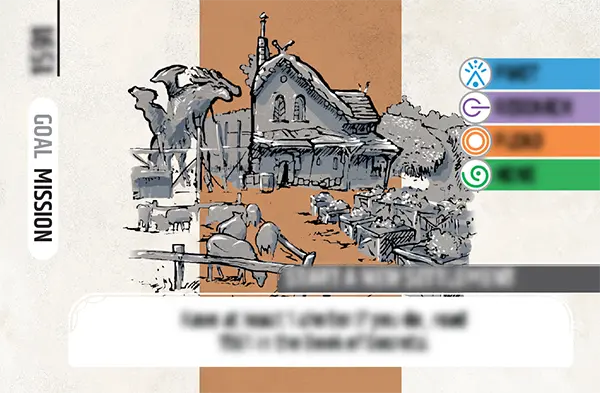
你完成任务（完成任务后，你可在结束游戏与继续追求命运之间做出选择）。
-
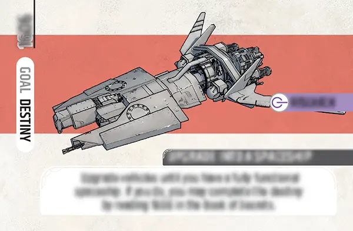
你完成命运（然后选择阅读其故事书条目，将结束游戏）。可收集多张命运卡。
任意玩家的时间、士气或体力降至0。若发生此事，请在 获取 故事书。
你甚至可在分配来游玩 Vantage 的时间用尽时结束游戏。Vantage 时长因随机因素与玩家选择差异很大（例如执行任务卡印刷的行动可显著缩短）。有些局远快于 2 小时，有些可能超过 3 小时。
除任务胜利、命运胜利或史诗胜利（任务与命运皆完成）外，你可将所追求并实现的一切定义为成功。
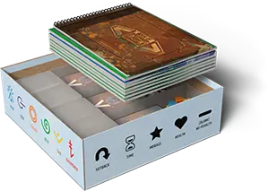
游戏结束时，将所有卡牌与组件收回盒中（剧透包获得的卡回到该包）。换言之一切完全重置，以便下次游玩 Vantage 开启新冒险。收纳时，将 3 叠地点卡平放入各自隔间，空隙中放各类标记/骰，再将所有故事书置于其上。
勘误与澄清
- 104
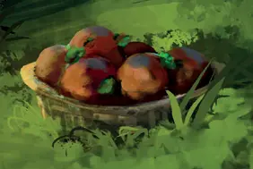
插画的相关部分被卡牌文字遮挡——一个装着6个水果的篮子。- 267
- 卡牌构成应为风 ，而非叶 .
- 431
- 将“Then go to 413, 723，或 728”改为“Then go to 476.”
- 874
- 将「（储备此卡）」替换为「（替换此卡）」。 10 Oct 2025
- 910, 911, 912, 913, & 932
- 这些钓鱼装备卡缺少3个激励槽位（你可以通过执行其 钓鱼 行动并获得特定结果）。
- 948
- 将激励能力的费用提高到 2 激励（而非 1）。 10 Oct 2025
- 957
- The 骰子槽位 缺少激励输出 。当你在此槽位放置一枚挑战骰时，立即获得 激励 标记放在该卡上。
- 962
- The 骰子槽位 缺少激励输出 。当你在此槽位放置一枚挑战骰时，立即获得 激励 标记放在该卡上。
- 1013
- 骑乘 应为 激励 能力，而非卡牌行动。
- 1016
- 这张载具卡缺少3个激励槽位（你可以通过执行其 钓鱼 行动并获得特定结果）。
- 1092
- The 制作 行动指引你找到正确的卡牌（881），但列为「Steelclamp」而非「Crabgrip」。此类卡名与编号不符时，以编号为准。
- 1444 & 1450
- 第二个激励能力应为“回收另一张卡上的1枚挑战骰”
注： 以下勘误已纳入 故事书查询.
- 移动 051–063
- 为使该行动更友好，当你 下潜，我们已将文字修订为：“你在水下时将全部载具卡储备（若有）。”
- 观察 145 & 301
- 你获得的能力应为 1483 （非 1482).
- 观察 303
- 将整个结果改为「当你沿石上线条描摹，三个颜色分明的图标浮现。你可选择聚焦其一。若选绿色图标，获得法术 1236。若你选择粉色图标，获得法术 1237。若你选择蓝色图标，获得法术 1238.”
- 观察 439
- 将「多于 1 枚骰子」改为「1 枚或更多骰子」。
- 接触 579
- 在第一个要点中， 410 应为 499.
- 接触 1435–1452
- 改为「旅行商人向你出售支持六项行动之一的特殊商品。你可先最多卖出 1 张卡（来自卡阵或储备）获得其金币面值，然后选择一项或获得 1 激励：」
- 协助 020–021, 023–026, 028, 030–039, 050
- 协助-分享 行动后应有「你可继续」（这些是你试图越过特定类型障碍之处）。
- 获取 123
- 这应给你卡牌 1472，非 1480.
- 获取 781
- 第一个选项应给你卡牌 1336，非 1344.
- 压制 024, 036, & 039
- The 焚烧 洞穴屏障上的行动应写“你可以继续执行观察-EXPLORE 行动。”
- 压制 530
- 对手的卡牌不应 1530；应为 1521.
- 压制 558
- 这应使你离开至 271，非 215.
- 压制 910, 911, 912, 913, 932, & 1016
- 这些与钓鱼相关条目的文字应包含“每从此处支付1个激励，额外掷1枚骰”。
- 离开 213 （北）
- 这应带你前往 218，非 210.
目前没有官方勘误，但规则书更新与澄清会在可用时纳入本参考。
逃生舱
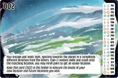
每个逃生舱的视野独特，它们朝向6个不同 区域 星球。每艘逃生舱可坠落于 21 地点 （共 126 处地点）——可能坠毁靠近另一玩家，但绝不会在同一地点坠毁。你不可执行 行动 在逃生舱内于其他卡牌上。
经历
每个 角色 都有一张特定的经历卡，可用于减轻挑战骰结果，甚至获得体力。然而，若有3个 激励 你的经验卡上（它已「满」），在你回合结束时你 必须 失去该卡（无法找回），可用替代卡替换角色（通常是好主意，但若已有角色备用版本，可不替换）。发生时，经验卡与角色卡上的挑战骰 已回收 至挑战骰池。你当前角色卡上的所有激励转移至新卡。
常见问题
若因玩家时间、士气或体力降至 0 而结束，是否完成当前行动？「集结作最后一次机会」每局能否多于一次？
若某玩家的时间、士气或体力降至 0（通常在行动第 6 步，早于获得任何收益），立即阅读该任务在 TAKE 故事书中对应条目，其中包含可能继续的选项。若选择继续，会指示你「继续游戏」，此时你完成此前未完成的部分（包括获得当前行动的收益）。「最后一次机会」的意图是：最终就是最终——每局一次——但措辞故意略留模糊，以便玩家按自己的方式结束或继续。这是你们的旅程，不是我们的！
如何获得更多技能标记？
技能标记主要在游戏开局、尚缺乏多种方式缓解骰子结果时发挥作用。然而游戏中许多行动会给予特定技能标记（例如「获得 1 个 move」）或随机技能标记（掷 1 枚技能骰）。其中一些行动非常稳定——你们只需尝试各类行动并交流发现。甚至起始组件里就内置了几种方式：如版图所示，若你的时间/体力/士气为 6 且将再获得，则改为获得 1 个随机技能；如起始角色所示，你可支付 2 激励获得 1 个 move 技能标记，或在重掷且结果相同时获得 1 个技能。
两本蓝色故事书
有两本不同的蓝色故事书，一本用于移动行动，一本用于离开行动。
“将它们放在中央板”
若挑战骰能力写“将其放入中央板”，指的是中央板的惩罚区 中央板 （否则会写“回收”骰，将其送回挑战骰池）。
卡牌行动
你可以在卡阵中的卡牌上执行多种“卡牌行动” 卡阵、供应区与任务上。这些或在卡右侧列出（用故事书查费用与结果），或在卡底（显示技能类型、费用与结果）。执行卡牌行动时，照常遵循所有行动步骤。
槽位内带文字的挑战骰槽
如示例 此处所示，你可以在执行匹配行动时将挑战骰放在这些槽位上（例如，在执行某 协助-创造 行动时，可将骰放在含「create」一词的槽位）。部分槽位含多个词，执行任一词对应行动时可用。
城市
城市地点标有城市名（或镇、村等——皆视为城市）。城市例外于每地点仅 1 次地点行动的常规规则。「你可在此执行多项不同行动（每回合 1 次）。」请注意「不同」——不可两次选择相同行动。
地点行动限制 vs. 卡牌行动与离开行动
每个地点你最多执行 1 次地点行动（除非该处地点行动写明「继续」）。此限制不适用于卡牌行动与离开行动。例如角色卡有多项行动（master、buy、equip）；可在不同回合执行任一项，甚至重复同一行动（除非写明只能执行一次）。
什么是“阵营徽记”？
这是你在 Vantage 中可找到的诸多卡牌类型之一。它在术语表中的 物品 为「徽章」。获得徽章时，卡上多处会出现「emblem」一词。
是否有重要且常用的、未收录于印刷规则书的规则澄清？
注： 这些变更已纳入本 Rulepop。
- 若挑战骰能力写「将它们放在中央」，指中央板的惩罚区（否则会写「回收」骰，即归还挑战骰池）。[第 11 页]
- 不可使用储备卡上的槽位、能力或威能，但保留激励标记。储备时，卡上挑战骰回收。[第 12 页]
- 不可将挑战骰放在供应区横向卡上。[第 12 页；印刷规则亦载：「逐枚将掷出的挑战骰放在卡阵卡上」]
故事书中是否有影响游戏玩法的错误？
自 Vantage 印刷以来，我们在故事书中发现若干影响玩法的错误（即使忽略此勘误，这些行动仍会得到好卡作为结果，只是非原定卡牌）。建议在故事书这些条目旁点一小点；游玩遇到时，即信号去阅读 勘误.
如何赢得 Vantage？会输吗？
简答是：有，Vantage 有明确胜负条件。但完整答案更复杂：Vantage 的胜利取决于你是否 外在 驱动或 内在 驱动（或两者兼有）。
- 胜利：你们当初来到这颗未知行星，共有 21 种不同理由——开局时会为整组随机抽取其中 1 个任务。你们并未计划坠毁，因此还要解决最终去向——游玩过程中，你们最多可发现 11 种完成所谓「命运」的选项（例如多种离开行星的方式）。完成任务或命运（或两者皆完成，即「史诗胜利」）即可赢得 Vantage，但规则也写明，你们可以自行定义所追求并实现的成功。Vantage 对何时结束游戏给予一定弹性：若已完成任务或准备完成命运，可选择继续游玩——大概以史诗胜利为目标——也可决定游戏结束。
- 失败: 每位玩家拥有固定数量的体力、士气与时间（「时间」涵盖除身心之外的各种限制）。任一玩家首次体力、士气或时间降至 0 时，游戏可能结束——视情况你们有几种选择——但若第二次发生，游戏即结束。若尚未完成任务或命运，则失败。Vantage 不过度强调失败，更关乎旅程、沿途经历与对你重要的事。
我明白内在胜利在桌游中并不常见。你玩过 The Mind 吗？严格来说，若在 10 个等级全部通过且未失败，才算赢 The Mind。我从没做到过。但我仍有过感觉像赢了的 The Mind 对局——也许我们玩了一次在第 3 关失败，决定再玩一次做得更好；若下次到第 5 关，我们就达成了目标并感觉像赢了。你在数字 Roguelike 里也可能有同感——比如决定围绕某张牌组 Slay the Spire，或在 Balatro 里用新 joker 玩出机灵组合。
话虽如此，若你不喜欢游戏中这类内在动机，可改追求任务（你来行星的初衷）或命运。任务适合外在动机者（或在众多选项与路径中需要聚焦目标的人）的胜利条件。
能否与他人远程游玩 Vantage？
若你有 Vantage，可与同样拥有游戏的任何人远程游玩。只需语音（事实上更贴合主题）。远程顺畅合作需要了解其他玩家的某些信息。为便于此点，请复制并使用 此 Google 表格 远程游玩时。
若玩家能解释地点卡上一切，包括可执行的行动，为何不能直接把卡给其他玩家看？
- 两个人看着完全相同的图画、场景或视野，描述方式也不会相同（无论现实生活中还是游戏中，等等）。
- 它鼓励玩家谈论所见、用文字表达并真正倾听彼此。
- 这节省时间——若人人可见，人人都会花时间观察。
- 这符合主题。我们身处星球不同区域，我能看见你所见并不合理。
- 这增加重玩价值，因为看见与听描述不同——若我到你描述的地点，未必意识到是同一处。
- 这增添了好奇与期待。若你描述的事物引人入胜，我也会好奇希望有朝一日亲自找到。
- 这不鼓励主导型玩法，让玩家能自行决策。
若两名玩家在同一地点相遇会怎样？
玩家可共享地点；若如此，照常轮流，在回合间来回传递地点卡。规则关于共享同一地点有两条说明：
首先，放置挑战骰时：若其他玩家在你地点，经许可可将其卡上开放槽位（含非影响槽）放置挑战骰。
第二，阅读行动结果时：若另一名玩家在你的地点，你可以：
• 与你一同离开/移动（同时、经许可；他们不支付费用），以及
• 给予他们金币、物品、植物与载具（忽略交换卡牌的"放置时"效果）
Vantage 的移动如何运作？
在 Vantage 中，玩家分散于广阔行星，只有你能看到自己的地点（正如你看不到其他地点）。地点为大卡，直立置于面前卡架。你始终面向北，真正透过角色双眼观察——你不是微缩模型，你就是角色。
回合中可选行动之一，是从当前地点沿任一基本方向移动到相邻地点。下例中，罗盘显示你可轻松向东或向南走。若如此，完成行动后将当前地点卡按编号收回盒中（占位卡保留其位置），取出地点卡 103 或 576 放入卡架。
你也可改为向北或向西移动，但这些方向的难度未知。这是 Vantage 中「用眼睛」重要性的体现之一。你擅长移动——或更具体，穿越水域？水面看起来平静还是风暴欲来？你或其他玩家能否（机制上）为这种移动提供建议？只有在你于此地点决定向北或向西移动后，才会得知难度、执行行动并前往结果地点。
另请注意，虽始终面向北，仍可从地点底部附近地形判断南侧有什么。若南向旅程格外危险，地点文字会描述身后情况。
这就是 Vantage 中的移动。几乎每个地点（近 800 个独特地点）都允许你以回合行动向任意方向移动。如此每次移动都在故事中创造新分支。即使运气使你坠毁在同一地点（126 分之一），也可换方向开启新冒险。
在球形星球上，向北移动为何始终是选项之一？
世界是一张东西、南北皆无缝衔接的卡阵。主题上，有些地点只是更近、更远、更大或更小——完全不影响玩法，但世界必须东西、南北一致且无缝衔接。游戏将向前移动等同于向北移动（若到达极点后地点卡突然显示向前即向南，会令人困惑）。
就像我坐在电脑前或开车去农夫市场时，地球的确切形状对我并不重要（重力存在即可），Vantage 行星的确切形状对角色在行星上行走的游戏玩法或世界故事也不重要。唯一重要的事——更像特色而非游戏内实用机制——是可以绕行星走一整圈（主要是为了表明你在探索完整行星，而非地图有边缘的一小块）。
第一局开始前
首局建议时间、士气、体力用「大胆」起始档位，并避开困难坠毁地点。
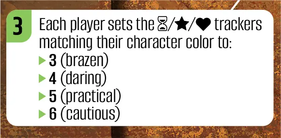
这些设置在地点 000 与逃生舱地点。游玩时大胆选择，因玩家首次时间、士气或体力降至 0 未必结束游戏——任务在 获取 故事书。首局很大程度上是实验，学习 Vantage 中不同行动、后果与风险承受。 这比任务更重要；不如试着用从不同地点（及卡阵中卡牌行动）获得 8 张卡填满卡阵。未达成此目标完全正常。若想要方向或加快游戏，可执行任务卡印刷的行动。
发现与感知是 Vantage 的重要要素。 你会琢磨如何做事、如何找到东西——这是本游戏发现曲线的正常部分，游戏不会手把手教你。去尝试吸引你的事物。用眼睛与直觉：若行动看起来很难，费用可能很高。有些行动结果或难度会出乎预期；这会在下次有人见到同类行动时有所帮助。对规则有疑问时，适用 主题乐趣万能规则 当场处理（事后再问）。
玩家之间的沟通至关重要，且不仅用于共享技能与影响骰槽（代表共享建议与专长）。每位玩家的选择属自己，但你所见所经历的信息可自由分享。要成功，常需描述所见并讨论选项，无论短期或长期目标。
植物
世界中植物种类繁多，每种都有挑战骰 槽位 与特定……的互动 元素。植物卡上的激励代表你对该植物性质的理解，你可以通过食用一段来学习。
流程概览
游戏由玩家轮流 回合 顺时针绕桌进行。每名玩家执行 1 行动 每回合（除非另有说明），使用 技能 由任意玩家贡献以降低行动 费用；掷骰 挑战骰 根据该费用判定任何 复杂情况 遭遇；以及 放置骰子 卡牌上的 卡阵 以缓解这些复杂情况。执行行动总会成功；挑战在于避免失去时间、士气与体力。
你通常从抵达区域开始探索——与其他玩家不同——并与各地点互动，希望向 3×3 卡阵添加卡牌；这些卡提供额外挑战骰放置槽与其他能力。一名或多名玩家可追求共享 任务 （你为何旅行至此星球），途中你可能发现各种 命运 （在本世界或之外决定命运的选项）。必须发现命运卡——开局不会揭示命运。协力共享知识、技能与影响骰槽，避免任一玩家时间、士气或体力降至 0。
单人游戏
单人游玩 Vantage 与其他人数相同（挑战骰数量正常缩放，单人共 10 枚骰）。没有 Automa 代表其他角色——你完全掌控。无论人数，你只控制 1 名角色（强烈不建议打破沉浸同时玩多名角色）。
目标
除玩家认为重要的成就外，Vantage 有四种目标类型，含短期与长期抱负。
任务
命运
目标
卡阵
每当你获得 纵向 卡（与角色卡同尺寸），放入 3×3 卡阵任一空位：最多 9 张牌的牌阵，角色居中。不可重新摆放卡阵中的卡牌。 当玩家首次完成其卡阵时，将命运1705放入 中央板.
除……之外 影响 槽位/能力，卡阵中卡提供的收益仅适用于你卡阵中的卡（不含其他玩家控制的卡或储备中的卡）。
每当你被指示 替换 或失去卡阵中一张卡，回收其上骰并将激励归还公共供应。失去的卡收回盒中。卡阵中必须始终有角色卡。新卡插入与被替换卡相同位置。
在 Vantage 中，相邻始终指正交相邻（左右或上下边缘相接触的卡牌）。
储备
你的……容量也有限 储备 供应区中卡阵外的纵向卡牌（容量为所有 卡阵中卡牌上的图标）。每当获得卡牌但卡阵已满，可储备新卡或储备卡阵中一张卡（角色卡除外）腾位。若超出储备容量，从储备失去一张多余卡。
供应区
你获得的部分卡牌 横向，而非纵向。这些卡牌要么与所有玩家共享（任务与命运），要么保留在你的供应区。还有 无上限 与你供应区中可拥有的横向卡牌数量有关。你不可以 放置挑战骰 供应区中横向卡牌上。
图标
互动
部分 行动 规定它们只能在「与……互动」时执行 智者。”就这些行动而言，你在执行某 地点 存在智者的行动（在插画和标识中均有体现 构成 图标），或当你执行你的一张智者卡上印制的行动时 卡阵.
物品
世界中有大量物品种类；下方列出部分可能需要进一步说明的。
弓与箭
徽记
盾牌
护盾可防止抵达危险地点时失去体力。这不包括基于气候的 伤害——它仅适用于明确显示体力图标的“抵达时”惩罚（).
课程
本世界有三种魔法，获得魔法途径最常见的方式是 法术 通过课程卡。每张课程卡有 观察-学习 带有……的行动 费用 of （你从 1–6 选数）。掷骰越多，越可能掷出可放在 槽位 课卡顶部以获得特定法术卡（此槽位可用于任意 观察-学习 行动）。即使你不掷出匹配图标，课程 学习 行动（直至5级）解锁该魔法学派的下一级课程。
地点卡
你的地点卡代表你在星球上的当前位置，其中包括你能看到的内容以及你的许多 行动 选项。将其留在你的地点 卡座.
下方描述中的具体数字是示例，指向下方的示例地点。
美术（背景）: 这是你的视界。可向其他玩家描述此景象但不可展示，因他们在行星别处，无法透过你的双眼观看。
地点编号（左上）: 与此地点互动时向其他玩家提供此编号，以便在故事书中查找对应条目（272）。
-
罗盘（右上）：此符号显示你可前往的四个不同基本方向 离开 从此地点（前方始终为北）。罗盘可能包含：
列出的相邻地点 （例如， 500, 273，且 271）：离开至这些地点中的任意一个是 1 费用 移动 无故事书条目的行动。
未列出的相邻地点：在选择沿……方向离开后 * 地点，费用在该地点编号对应的离开故事书中揭示（例如，272 向南移动）。
被阻挡的方向：若无编号或 *，你无法沿该方向从此地点离开。
-
描述：关于该地点的简述。你可以向其他玩家朗读这段文字。
部分地点显示 左下角图标，后接引号内文字。表示神秘旅者在此地点与你对话。
A 图标表示必须立即执行的强制性指示 抵达时 （通常是气候相关惩罚）。
元素体图标（例如， ）表示与具有该构成的事物互动。
地点行动（几乎总是在右侧边栏）： 你可以向其他玩家朗读这些内容。这是在各类别中与地点互动的不同方式 移动 , 观察 , 接触 , 协助 , 获取 , and 压制 （例如， 观察-研究）。除非行动结果 另有说明，每个地点你只能执行 1 项地点行动。
地点卡座
由于你的 地点 代表你的视界（你能看到的内容）， 仅你可观察你当前的地点卡。将其放入地点卡架以保持竖立且易于看见——角度应使其他玩家无法看到。
障碍
部分行动描述含条件句变体「若 ____ 不再是障碍，将此费用降为 1」，通常关于向北越过挡路生物。请酌情适用 主题乐趣万能规则。例如，若你与一名 智者 在某地点时，你不能使用「潜行 绕过智者」行动，因为他们已经知道你在那里。
光球
世界中有许多大型玻璃光球，为旅者指路。Vantage 并非 App 驱动游戏，但一类光球互动需访问网站，向全球其他玩家查看与发布周边提示。若进入没有光球的地点则无法使用。此功能受 Elden Ring 启发；感谢 Jose Manuel López-Cepero 创建网站（orb.stonemaiergames.com）。玩 Vantage 不需要该网站，应用中不会获得或失去任何与游戏相关的内容。
惩罚
回合 步骤 6：承受来自已掷但未放置的挑战骰的惩罚
结算无法放入的骰子 卡牌槽位，随后将其弃入中央板的惩罚区。
谜题
为获得世界上许多 神器 and 徽记，你必须解开特定谜题。你最终负责宣布谜题答案，但若请求协助，其他玩家可看谜题。少数谜题需不同颜色标记，我们建议用 技能标记. 若遇到谜题且想要替代方式获得收益，改执行匹配的 9 费用行动（例如 观察-9-解谜).
感谢 Juliana Moreno 与 Ariel Rubin（The Wild Optimists）设计了其中许多谜题！
友情提醒
你可以随时与其他玩家公开交谈并分享任意卡牌的文字，但不得展示你的 地点 给任何其他人（除非卡牌特别说明），也不得观察你当前不在其上的任何地点。
当你离开前往 列出的相邻地点，它是 移动 带有……的行动 费用 为 1。执行所有步骤以完成 1 费用 移动 行动；与任何 行动，此次移动即你的整回合。
放置挑战骰时，除非某挑战骰能力另有规定 槽位，你甚至可以放置 空白 and 挫折 结果。例如掷 1 枚挑战骰移动到相邻所列地点且结果为空白，可放在通用 移动 卡阵中某卡上的槽位（以获得激励加值），即使不放置也无惩罚。
回合中你可以不选择地点行动，而执行 行动 在 卡牌 在你的 卡阵、你的供应区，或 中央板。若如此，使用卡底编号查看该行动的条目。
每地点每局只能执行 1 次地点行动，除非行动另有指示，或卡标明第二次行动始终可用（例如，你不能执行 获取 地点上的行动，随后再执行 压制 行动）。除该限制外，你完全自由选择行动。
执行行动前不可阅读费用与结果。同样，部分行动结果含更多选择；选择时可读选项，不可读结果。
Vantage 跨局唯一「持久」要素是信息。你对世界的所学可在未来局中受益，我们鼓励玩家利用该知识。请尊重其他玩家想避开或学习你已知的愿望。
有关使 Vantage 更简单或更困难的完整方法列表，请参阅《秘密之书》第11页的“难度”。
资源
Watch it Played 规则视频。
如何教学 Vantage 来自设计师 Jamey Stegmaier 的视频。
通过……加入关于 Vantage 的讨论 Facebook 群组 或在 Board Game Geek.
The Vantage Stonemaier Games 网站上的该栏目有游戏概览、新闻更新以及更多资源链接。
行动结果
回合 步骤 7：阅读行动结果
大多数行动会产生故事书中描述的即时收益（部分卡牌行动则在卡上描述）。
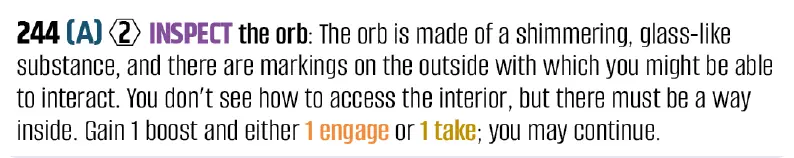
多选项列表中，在了解或查看结果前选择（例如若选择前往地点 259，仅决定后才查看该卡）。
若因此你的地点改变，负责管理卡牌的玩家会使用你的 占位卡 收回当前地点卡、找出并交给你新卡、标记新卡位置。罕见情况下若移动到他人地点卡两侧，来回传递即可。
若某地点的 （抵达时）效果或任何其他惩罚——会指示你承受1点炎热、寒冷或缺氧伤害，并失去你可选择的1点 或两者均为 1 且 1 .
若你本应获得 // 当该数值已达上限 6 而再获得，改为获得 1 随机技能（掷技能骰，获得与结果对应的技能标记）。
-
技能
若结果包含技能 支付 （例如，支付 1 移动 或 1 压制），任何玩家可弃置1个技能标记，使你获得收益。若无人支付，你不会获得收益。
若结果包含技能 收益 （例如，获得 1 移动 或 1 接触），获得 1 个该类型的技能标记。
若结果指示你 获得随机技能，掷1枚技能骰以决定获得的标记。有时收益为特定技能（例如：“掷2枚技能骰并获得全部 移动 结果”）。
-
若另一玩家在你所在地点，在此步骤你可以：
与你一同离开/移动（同时、经许可；他们不支付费用），以及
给予金币、物品、植物与载具（忽略交换卡的「放置时」效果；交换卡保留全部挑战骰但失去全部激励）。
若行动结果或任何后果导致你失去你没有的东西（例如，失去 无钱时失去储备卡、无储备卡时等），忽略该指示。此规则仅适用于结果， 非费用——若你无法支付所列费用，则不得获得收益。
若你将获得一张你卡阵中已有的卡牌，改为在卡牌上获得 1 激励（若可能）。
若你将获得另一玩家已有的卡牌，两名玩家决定谁保留/获得。若卡归你，卡上挑战骰回收，激励丢失，并获得卡上「放置时」收益（若有）。若卡仍归对方，你改为在角色上获得 1 激励（若可）。
符文
世界各处有与 6 种技能图标匹配的符文，部分行动要求你在当前地点寻找特定符文。符文颜色不重要（有些因此藏得很好），镜像也不重要；只看形状。
-
移动
-
观察
-
接触
-
协助
-
获取
-
压制
示例回合
这是对示例回合的简要概览，其中每一项 步骤 此处描述的内容在其他处有详细说明。
选择一项 行动 三种行动类型之一： 我在地点 272，决定执行一项 地点行动。我大声朗读我的地点描述并说明我看见什么。这片区域看起来并不危险，于是我决定执行 移动-漫游 行动（进入下一步骤后不得改主意）。
阅读 费用与行动 （非结果）： 另一名玩家在 移动 故事书并朗读费用（3）与行动（「漫游 神秘区域周边”）。他们不会阅读行动结果。
每有一个匹配项，费用减 1 技能 可由任意玩家选择支付： 我没有 移动 技能标记，但另一玩家有。他们弃掉 1 移动 技能标记，使费用减 1。
从……掷骰 挑战骰 池，数量等于剩余费用： 我掷 2 枚挑战骰，得到 1 时间、1 体力须处理（主题上行动比预期更费时且弄伤自己）。
将掷出的挑战骰逐一枚放置于卡阵卡牌上（任意 槽位 你的卡牌上以及其他玩家卡牌上的影响槽位）： 我的角色，船长，两个挑战骰槽位都空着。我正在执行一个 移动 行动，因此我可以在 移动 槽位——我选择时间骰——并获得 1 激励 作为立即效果，在角色上放 cube。我卡阵仅角色卡且无其他玩家开放影响 体力结果的槽位，因此我无法放置体力结果。
承受 惩罚 来自已掷但未放置的挑战骰： 显示体力的未放置骰子进入中央板的惩罚区 中央板 ，我失去1点体力（调整我的追踪器）。时间骰仍留在角色卡上。
阅读行动 结果: 另一名玩家朗读故事中条目 272 的结果 移动 故事书。
结束你的回合： 行动结果未写“继续，因此我的回合在此结束。若行动写明「继续」，我必须再执行一项行动；若写明「你可继续」，则是否再执行行动由我选择。这仅适用于当前回合；除非其他行动允许，未来回合不可在此地点继续。我左侧玩家进行下一回合。
种子与树木
种子是 卡阵卡牌，但你无法获得 激励 其上，直到你选择特定 地点 将生长之处（你所在的地点）。此后只需时间，种子长成树。树为横向卡，保留在 供应区 在其生长地点。记住树的位置，将树卡叠在其地点卡上（建议玩家离开时不要收回该地点，留在桌上）。
智者
Vantage 世界居住着各种各样的智者（此世之人）。有时你会见到并互动，他们也积极行走、各自生活——无处不在。行星上许多人会短期加入你，结伴的临时性由 激励 智者卡上（若智者激励为 0，行动结束时失去他们，除非行动中恢复激励）。每名智者有一个挑战骰 槽位 需支付激励（来自智者）使用、与其专长能力相关的挑战骰槽，以及影响 挑战骰槽位，用于与共享相同 构成 （含智者卡本身印刷的行动）。除非行动另有说明，智者上每项行动执行次数不限。
开局
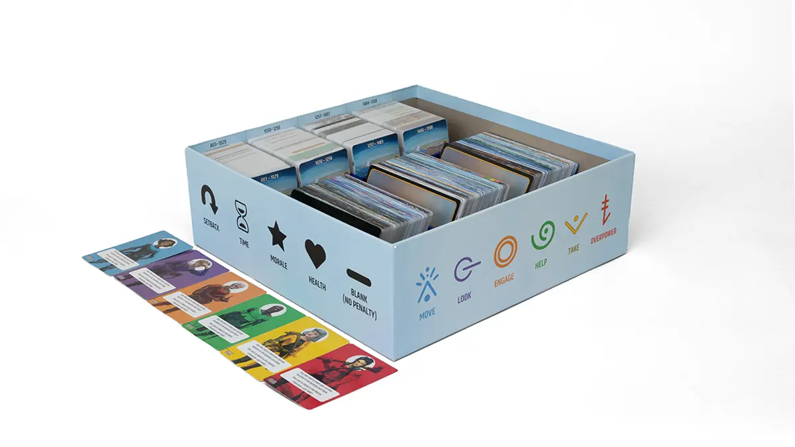
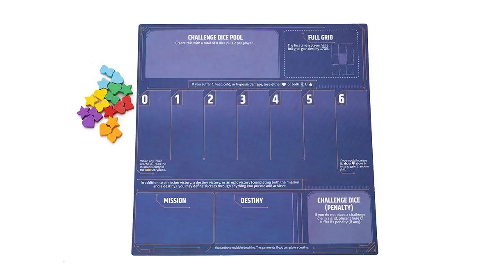
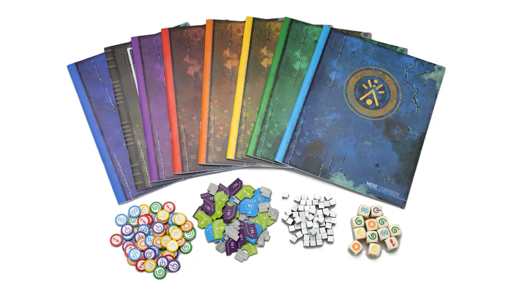
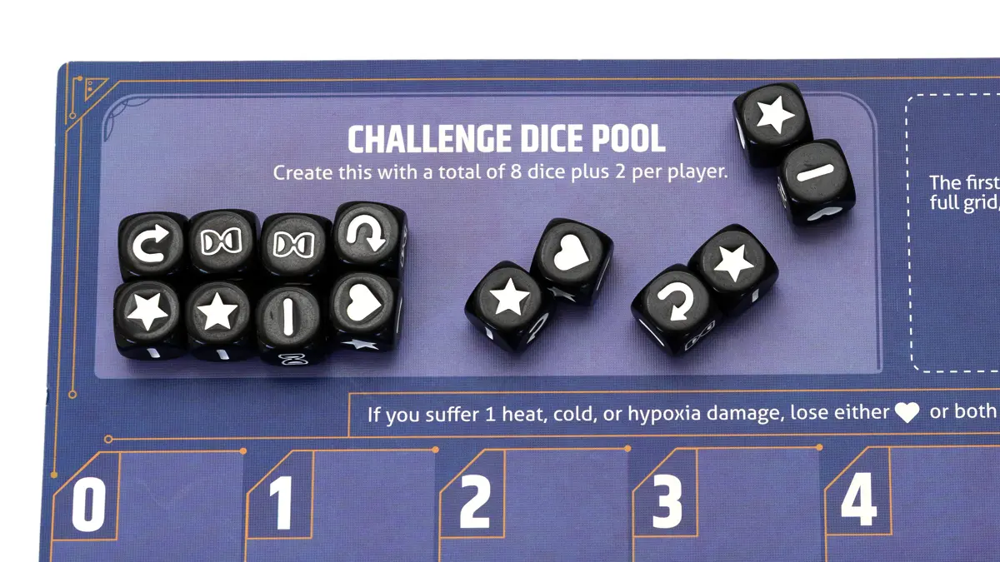
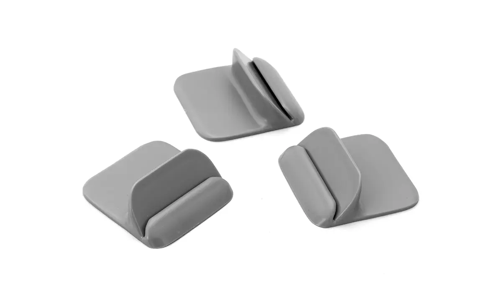
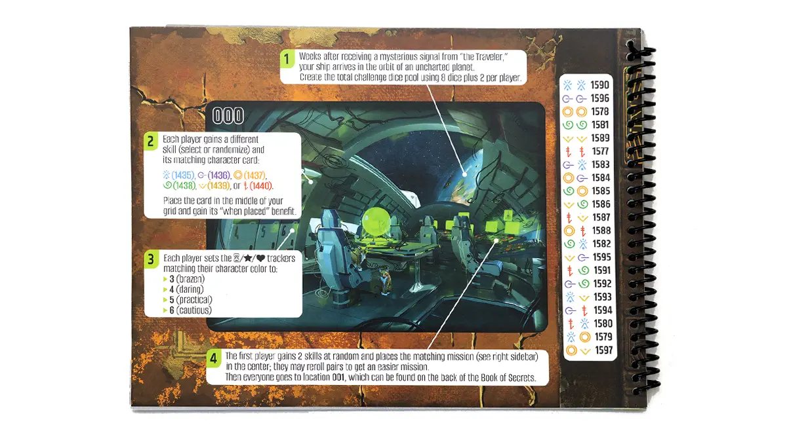
将游戏盒放在桌上，靠近负责查找与归还卡牌的玩家（他们获得占位卡 1709–1714）；这比传盒更高效。将三叠大卡从平放位置倾斜取出。
向挑战骰池放入 8 枚挑战骰加每名玩家 2 枚（例如三人 14 枚），其余挑战骰收回盒中。
每位玩家获得 地点卡座。随机选一名玩家担任 起始玩家.
将《视界之书》放在桌上，封底朝上以显示地点 000。按地点上的说明操作 000 完成开局，用技能骰随机化。每位玩家在此独立获得角色与起始数值。
信息共享
由于你的 地点 代表你的视界（你能看到的内容）， 仅你可观察你当前的地点卡.
你不可查看任何先前地点或其他玩家见过的地点。可向其他玩家描述卡面、朗读描述、分享地点行动选项。
若指示你观察……中的某一页 《视界之书》，你只能观察该页，且不得向其他玩家展示。
标记、骰、各玩家卡阵、储备、供应区中的卡，以及指示置于桌上的卡，均为公开信息。
技能标记
技能标记是玩家开局及局中以多种方式获得的收益（包括当你的时间 /士气 /体力 会超过6）。它们代表各类行动类别的知识片段（移动/离开, 观察, 接触, 协助, 获取，且 压制).
每当你有机会支付技能时，任何玩家都可以支付。技能常用于 降低费用 行动——无论你在执行还是其他玩家——但部分行动结果也可支付技能获得额外收益，部分「抵达时」惩罚要求支付特定技能。
每当你获得“随机技能”时，掷1枚技能骰并获得与结果匹配的技能标记。
技能
回合 步骤 3：任意玩家每可选支付1个匹配技能，行动费用减1
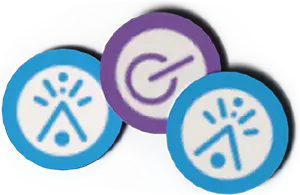
技能（标记）代表洞见与建议。
玩家可随时支付技能使彼此受益，不仅限于降低行动费用。
将已付技能标记弃入公共供应区。你只能使用所提供的标记。
Skirm
Skirm 是许多人会玩的卡牌与骰子决斗游戏 智者 世界。Skirm 玩法见卡 798，智者（及你若未从 剧透补充包）。剧透包设计旨在贴合此虚构行星。Vantage 单局中收集的所有 Skirm 卡共占 1 个 储备 容量（它们不能放入你的卡阵）；游戏结束时将所有非默认 Skirm 卡归还剧透包。
Skirm：快速变体
开局
- 忽略卡牌 798.
- 若这是你第一次 Skirm 决斗，获得命运1603.
- 来自 剧透补充包，获得 1 张随机卡牌。
掷技能骰
- 为自己掷 6 个技能骰。
- 为智者掷 6 个技能骰。
选择卡牌
- 选择 1 张你的 Skirm 卡为自己使用。
- 从该智者的牌包中随机选择1张 Skirm 卡（若行动中指定则为特定卡）。
结算
- 你试图让你卡上图标匹配骰多于对手卡上图标匹配骰（忽略全部文字）。
- 若你的卡牌有 更高速度 （左上角数字），你可 重掷 all 你的骰子一次.
- 若你的卡牌有 较低速度，你 打破平局 比较骰子时。
结果
- 若你获胜： 获得 $2。
- 无论胜、负或平： 将获得的卡牌留在你的 储备 （你的整个 Skirm 收藏仅计为 1 张储备卡）。
卡牌槽位
回合 步骤 5：将掷出的挑战骰逐一枚放入你的卡阵卡牌上（及影响 任意玩家卡阵卡牌上的槽位）
通过将骰子置于空槽位，你避免承受其 惩罚.
-
每个槽位最多可放1枚骰。大多数槽位对可放置的挑战骰类型有限制。 点击下方示例查看详情。
技能类型 （例如，你仅能在……期间在此放置挑战骰 移动 (）行动）。
能力 （例如，你仅能在……期间在此放置挑战骰 协助-创造 行动）。 重要： 若有与能力相关的骰槽或能力，移动到新地点时务必留意，尤其他人为你读故事书时。
互动 （例如，你仅可在涉及 sinew（）生物。含显示此图标的地点行动与卡牌行动，以及互动离开行动（例如「潜行绕过生物」）。
许多槽位有 , , , or , 表示仅可放置显示该特定结果的骰。无特定骰面的槽位，可放任意结果（甚至 ).
影响 骰槽位经你许可可由任意玩家使用，即使其在不同地点。它们代表专长与个性（例如有士气影响槽的角色积极且有领导力）。若其他玩家将挑战骰放在你的影响骰槽且存在奖励（如激励），你获得它。
要将挑战骰放在地形特定骰槽（如水下，从美术辨认），当前地点须匹配该地形。
部分槽位放置挑战骰有费用（箭头指向 朝向 槽位；你必须从同一张卡支付所示的激励（1或2）。
部分槽位在你放置挑战骰时提供即时加值（箭头指向 离开 从槽位移除；将获得的激励放在同卡）。奖励通常为激励，也可能为其他（技能、 //, 特定卡牌等）。
若其他玩家在你地点，经许可可将其卡上开放槽位（含非影响槽）放置挑战骰。
若其他玩家供应区有地点特定卡且你在该卡地点，可对该卡执行行动。
每当挑战骰被放在槽位上，它会留在那里直到全部挑战骰 已回收.
法术
将法术放入你的 卡阵，获得 激励 法术栏中每张卡上（含法术卡本身）。大多数法术有影响 挑战骰槽位以及强大的影响激励能力。
剧透
与《秘密之书》术语表类似，本资源包含游玩 Vantage 时可能遇到的许多词条。强烈建议仅在有问题时阅读「剧透」条目，且仅在遇到特定卡牌类型或术语之后。例如首次见到 Lesson 卡，可查阅「Lessons」。
剧透补充卡包
探索行星时，你会赢得这包神秘卡牌的内容吗？跟随最大胆的游戏直觉去发现！
故事书查询
- 1
- 2
- 3
- 4
- 5
- 6
- 7
- 8
- 9
- ⌫
- 0
- ✓
故事书
在大多数 回合 游戏中会引用故事书中的短文：回合早期你会朗读 费用 以及行动（加粗部分），随后在你回合稍后你将朗读 结果 （非粗体文字）。建议玩家分担朗读，另一玩家在你回合朗读以便你专注执行行动机制。
共有9本书：每种技能各1本故事书，1本离开行动， 《秘密之书》，且 《视界之书》. 分开多本故事书（而非一本巨册）是为了帮助玩家避免剧透同一地点上的其他行动，因为每项行动费用与结果不同。分开的故事书也避免玩家先做出选择、看到其他选项后再改主意（这违反规则与游戏精神——你们需用眼睛与全体共享知识，在执行前直觉判断行动性质与难度）。
建筑
建筑是保留在你供应区中的横向卡牌 供应区. 你（任意玩家，不限于建造结构的玩家）仅能在结构起源地点上对其执行行动；可将结构卡叠在其地点卡上以作记忆（我们建议玩家离开时不要将此地点卡收回盒中，而留在桌上）。除非行动另有说明，每项结构行动可执行次数不限。
地形
有多种类型的 地点 在 Vantage 中，默认为「陆地」地点（行星表面户外）。部分卡可能指特定地形。
城市
室内
海洋
海平面是不断变化的景观——你受潮汐摆布。你可以重复 行动 于海洋地点（即：即使上回合已在该海洋地点执行过地点行动，仍可再执行地点行动）。海洋地点还可选择潜水；若你从水下地点浮出水面，洋流可能改变你的位置。没有预设可移动到的相邻海洋地点。
天空
地下 （洞穴屏障、洞穴与地牢）
水下
水
有许多 地点 有溪流、河、池、湖与海洋的地点。部分卡在你「水上」或近水时有特殊收益。地点上无符号标示；仅取决于当前地点能否看到水体。若在水下或空中，则不算「水上」。
标记
Vantage 包含 激励 标记（方块）以及 技能标记 （纸板）。方块有时用作激励以外的计数物（例如在目标卡上），或在某些谜题中按定义使用。
追踪器
用这些追踪你角色的时间 ，士气 ，以及体力 在 中央板 游戏盘。
旅者
神秘旅者发出信号将你们带到此行星。旅者出现在许多地点，以特定图标 以及引号内的文字（他们在与你对话）。
试炼
世界上每种文化都有其族人及希望融入他们的人的入会试炼。每项试炼 地点 拥有特定行动——对其对应（内容）的重要行动 智者——在你经其他行动被正式欢迎参与试炼后可执行。试炼本身是谜题，每名玩家每局可尝试一次。若某玩家试炼失败，同局稍后其他玩家可再试。
回合
- 选择一项 行动.执行行动时你总会成功；挑战在于避免失去时间 , 士气（)，且 体力（).
- 阅读 费用与行动 （非结果）。 玩家在对应技能故事书中找卡号条目，只读费用与粗体文字。费用为 X 的行动，从 1–6 选数。
- 每有一个匹配项，费用减 1 技能 可由任意玩家选择支付。 技能代表洞见与建议。例：观察行动费用为 2，但你或另一玩家支付 1 技能标记，费用降为 1。
- 掷骰 从挑战池取出等同于剩余费用的骰子。 若没有足够的可用骰，先将中央板与卡阵中卡牌上的全部挑战骰回收。
- 将掷出的骰放在 槽位 你的卡阵中（以及任意卡阵中的槽位）。 多数槽位有类别，表示能否放置挑战骰，取决于技能类型、能力、构成、骰面等。影响（）槽位与能力可使任意玩家受益。
- 承受 惩罚 来自已掷但未放置的挑战骰。 失败 时间（）、 士气（）、 体力（），和/或将这些骰子与空白骰 放入中央板惩罚区。将挫折 回收进挑战骰池。
- 阅读 行动结果. 故事书描述行动的后果与收益（若离开行动前往相邻所列地点，直接找该地点卡）。多选项列表中，在了解或查看收益前做出选择。
- 结果是否写“继续”?
- 是。 你必须再执行一项行动（任意类型）。忽略地点行动限制。若结果写「你可继续」，由你选择。
- 否。 结束你的回合。
主题乐趣万能规则
若你对 Vantage 的规则、卡牌、能力或其他任何问题有所疑问， 选择在主题上最合理且最有趣的答案.
我们随时乐意实时或局后协助，若你在 Vantage Facebook 群组，在 BoardGameGeek，在 Vantage 常见问题 我们网站上的页面，或在 Stonemaier Games Discord 服务器。
载具
载具卡协助你旅行。部分载具有与地点相关的特殊收益 地形。许多载具有 移动-骑乘 指示你在……中使用指南的行动 《视界之书》……以找到特定地点卡。几乎所有载具都有 协助-升级 行动（需要 激励 从当前载具）以更换为更好的载具。